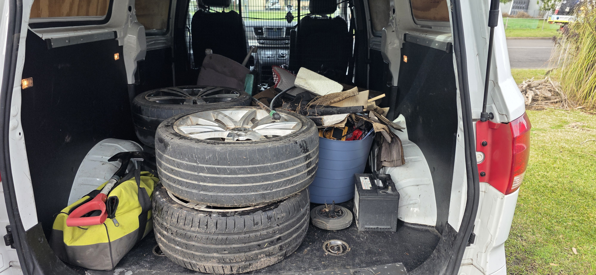

Household & Junk Removal
General junk, clutter, hard rubbish and everyday household waste cleared from the garage, yard or spare room.
Learn more about Household & Junk Removal“Only an arm’s length away.” And no, that pile won’t shift itself, we checked.
Fast, affordable rubbish removal and junk removal across the Central Coast & Newcastle, household clean-ups, hard rubbish, green waste, old furniture, mattresses and whitegoods. Same-day service, upfront pricing, and we do all the lifting so your back gets the day off. We’ll even grab your Marketplace & Gumtree bargains and drop them to your door.

Send a photo of your pile and we’ll price it on the spot.
Bought something on Facebook Marketplace, Gumtree or anywhere online but can’t fit it in the car? We’re your local pickup & delivery service, we collect from the seller and bring it straight to your door. If it fits in the van, we can move it.
From a single mattress to a whole house, we’ve got the truck, the muscle and the tip fees sorted. Your spare room can finally go back to being a spare room, not a storage unit.
General junk, clutter, hard rubbish and everyday household waste cleared from the garage, yard or spare room.
Learn more about Household & Junk RemovalShop fit-outs, office strip-outs and ongoing commercial waste for Central Coast businesses.
Learn more about Commercial & OfficeBranches, hedge trimmings, lawn clippings and storm debris, mulched and recycled where possible.
Learn more about Green & Garden WasteOld lounges, mattresses, fridges, washing machines and bulky items removed the same day.
Learn more about Furniture & WhitegoodsFull house and property clearances handled with care, discretion and respect for the family.
Learn more about Deceased Estate & Clean-outsConstruction offcuts, demolition waste and builders’ debris cleared so you can keep working.
Learn more about Renovation & Site DebrisWe’re a local Central Coast crew that turns up on time, quotes honestly and leaves your place spotless. No skip bins clogging the driveway for a week, just call, point, and it’s gone.
Call or send a quick photo of what needs to go.
We give you an honest, upfront price, no obligation.
Our crew loads everything and sweeps up after.
Recycled, donated or disposed of the right way.
From Woy Woy to Toukley and everywhere between. Tap your suburb for local rubbish & junk removal.
We’re proud of our reputation. Have a squiz at what the locals reckon on our Google listing.
★★★★★“Add one of your real 5-star Google reviews here, Lanky Services makes it easy to swap in the customer’s own words.”
AYour customerGosford, NSW
★★★★★“Paste a second genuine review here. Real names and suburbs build trust and help your local SEO.”
BYour customerWyong, NSW
★★★★★“And a third review here. We can pull these straight from your Google listing once you confirm.”
CYour customerTerrigal, NSW
The stuff people actually ask before they book, pricing, same-day, what we take, the lot. Can't see yours? Give us a bell.
Book your Central Coast rubbish removal today. Send a photo, get a price, and we’ll take it from there.